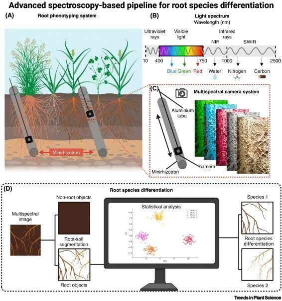

RootVision
Illuminating root diversity under crop mixtures
Currently, tools for quantifying root growth do not allow for species differentiation without destructive sampling, making it challenging to study crop mixtures and their underground interactions.
The RootVision project seeks to overcome these limitations by developing a new root phenotyping tool that can differentiate between species in crop mixtures using advanced spectroscopy and high detection of multiple root traits.
This non-destructive approach will enable researchers to study root diversity and interactions more effectively, paving the way for more productive and sustainable agricultural practices.
Learn more →